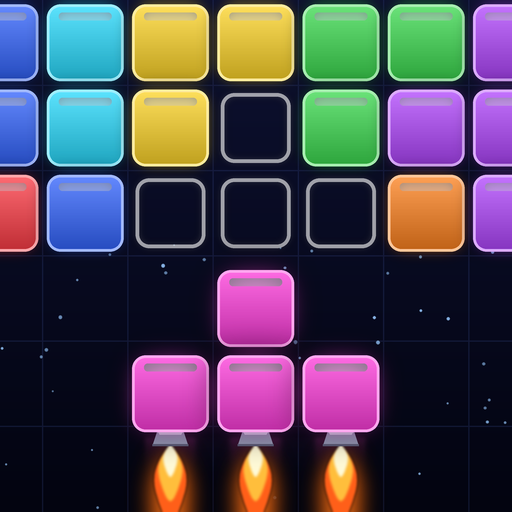

RiseGridRiseGrid Support
RiseGrid is developed and published by Aleksandrs Kalinins.
If you have a problem with RiseGrid, have feedback, or would like to suggest an improvement, please contact me by email:
Email: a63labs@proton.me
I will do my best to respond to support requests and feedback. To help me find a problem, please include your device model, your iOS version, and the app version (shown at the bottom of the pause screen).
Frequently asked questions
How do I play?
Blocks rise from the bottom of the board. Drag left or right to move the active piece, tap the board to rotate it, and swipe up to launch it to its landing position. Complete full rows to clear them and score points. The pause button is at the top right.
Is my game saved if I close the app?
Yes. Your game in progress and your best score are saved on your device and restored the next time you open RiseGrid.
How do I start a new game?
When a game ends, tap the restart button on the game-over screen.
How do I reset my best score or saved game?
Delete RiseGrid from your device and install it again. Deleting the app removes all of its stored data.
Does RiseGrid need an internet connection?
No. The game works fully offline. Only the Privacy Policy link on the pause screen needs a connection to open.
What data does RiseGrid collect?
None. Please read the Privacy Policy for details.